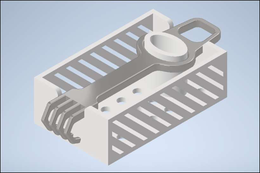
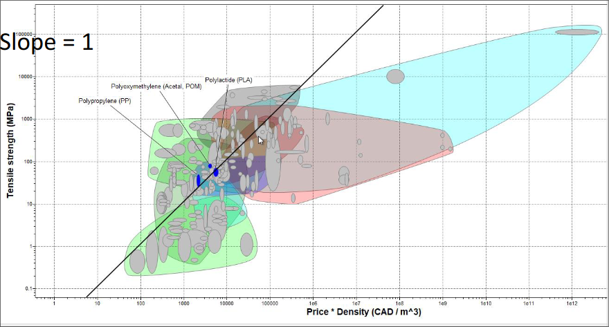

This project required us to create a system that would allow a robotic arm to sterilize surgical instruments. This consisted of two parts: the actual program which controlled the arm (coding subteam), and the model in which our chosen tool would lie (modelling subteam). I was a member of the modelling subteam. Some of the design objectives we came up with were:
The final result of this project consisted of a fully functioning program as well as a 3D printed design of the container in which our tool would be held. We decided on an open design for the sterilization cage with the tool hanging off the side but also secured on the inside, as we believed that this would result in optimal steam flow for sterilization. Our final Inventor assembly with the tool inside the model can be seen below:
My role, as a member of the modelling subteam, was to come up with this design as well as go through the design process for it in Inventor. Both of these tasks were performed in conjunction with my partner. As a coordinator for this project, I was also responsible for tracking meetings and taking notes during meetings. These were mainly for the modelling subteam meetings. For this project, I also had to perform an MPI analysis and pick ideal materials in a scenario that would reduce cost while maximizing tensile strength. My full graph generated from GRANTA can be seen below:
In retrospect, our model only considered two main factors: minimizing material used and allowing maximum airflow. This is why we used oblique grates and had an open top. This is also why we had the tool hanging off the side rather than actually secured all around. This may have resulted in a shape that may be more vulnerable to falling out, so it may have been more beneficial to have a closed top which secures the tool more safely.
Through this project, I used both GRANTA and Autodesk Inventor extensively. I also learned more about the engineering process, so I am a lot more comfortable with these engineering projects after this specific project. This project also introduced a subteam model, which would be more in line with what I may experience in the industry.